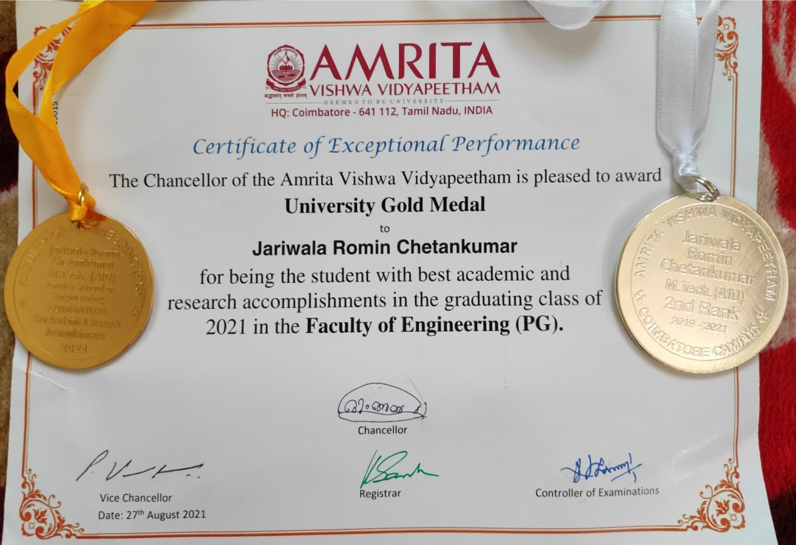
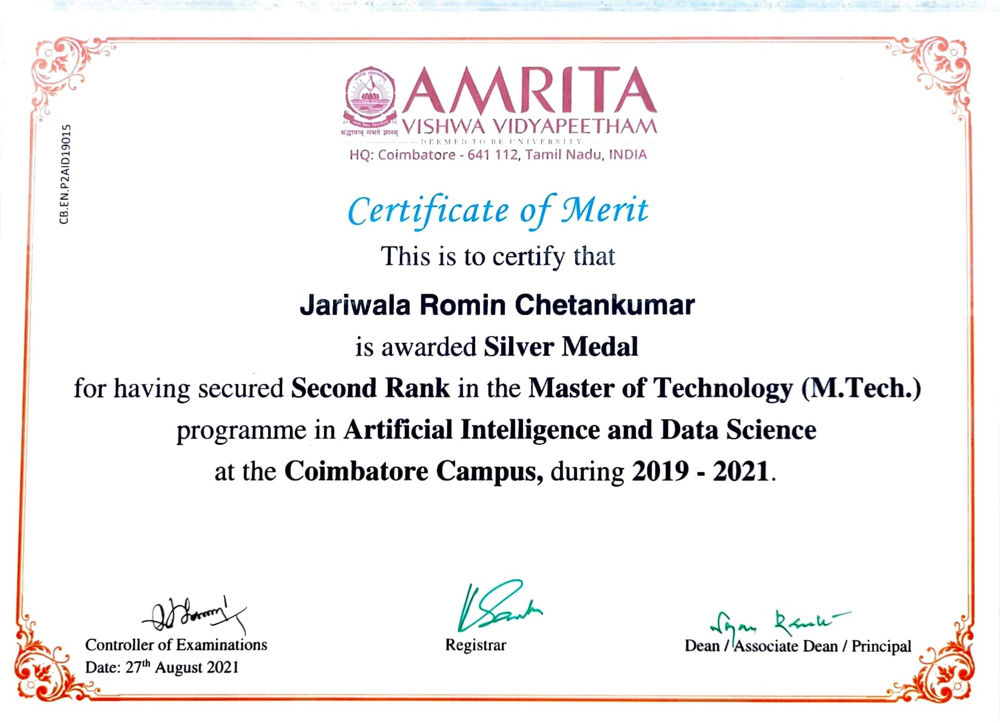
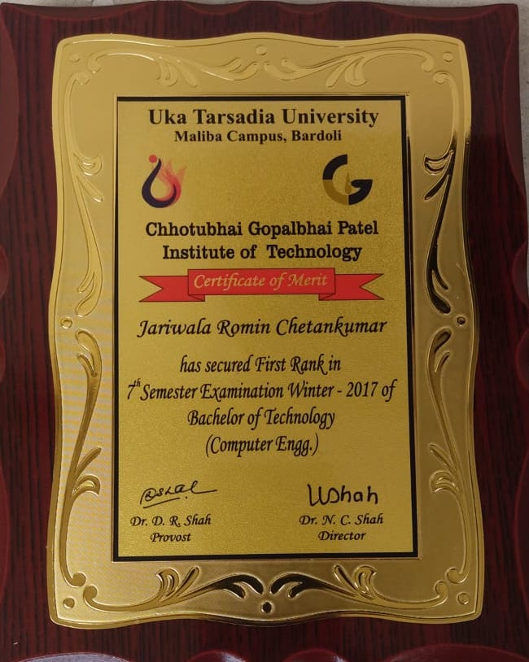

Unveiling the Tapestry of Success: Celebrating Milestones
Embark on a vibrant journey as we explore the threads that weave my achievements—a unique tapestry of passion, dedication, and thirst for knowledge. Each milestone represents a chapter in my academic story, showcasing the colors of academic brilliance and groundbreaking research. Witness the power of perseverance as these achievements form a remarkable portrait of growth, forged through late nights, relentless research, and unwavering commitment. Join me in celebrating the transformative impact of knowledge and drawing inspiration to dream big, push boundaries, and make a lasting mark. Gratitude to mentors, professors, and loved ones who illuminated my path. Step into this tapestry of success, where dreams find nurturing, accomplishments find celebration, and the pursuit of knowledge knows no limits.
I am proud to have been awarded the prestigious Certificate of Exceptional Performance and the University Gold Medal for my outstanding academic and research accomplishments in the graduating class of 2021 in the Faculty of Engineering (PG) at Amrita Vishwa Vidyapeetham. This recognition highlights my dedication, hard work, and commitment to excellence. I am excited to embark on a new journey in life, and I hope to bring the same passion and determination to all aspects of my personal and professional endeavors.
I am honored to have received the Certificate of Merit and the Silver Medal for securing the Second Rank in the Master of Technology (M.Tech.) program in Artificial Intelligence and Data Science at the Coimbatore Campus from 2019 to 2021. This recognition showcases my strong academic performance and dedication to the field of AI and Data Science. I am thrilled to have excelled in my studies and look forward to applying my knowledge and skills to make a positive impact in the future. I believe that this achievement reflects my determination and commitment to continuous growth and learning, traits that I carry with me as I embark on this new chapter in life.
I believe that my consistent success in securing the first rank an impressive six times in the semester examinations of the Bachelor of Technology (Computer Engg.) program reflects not only my academic prowess but also my unwavering dedication and perseverance in the field of computer engineering. This achievement stands as a testament to the countless hours of hard work and determination invested in my educational journey.
I am truly grateful for the knowledge and skills I have acquired during my time at Chhotubhai Gopalbhai Patel Institute of Technology, Uka Tarsadia University, Maliba Campus, Bardoli. The comprehensive education and supportive environment provided by the institute have laid a strong foundation for my future endeavors. I am excited about the opportunities ahead and eager to utilize my expertise in contributing to the ever-evolving world of technology.
This recognition as a recipient of the Certificate of Merit not only humbles me but also reinforces my commitment to excellence. It serves as a reminder of the importance of pushing boundaries, continuously learning, and striving for the highest standards of achievement. I am motivated to embark on new challenges, broaden my horizons, and make a meaningful impact in both personal and professional spheres.
With an unwavering passion for technology and a relentless pursuit of knowledge, I am confident in my ability to contribute to advancements in the field of computer engineering. I am committed to making a positive difference, innovating solutions, and driving progress in an ever-changing world. This recognition serves as a catalyst for my future endeavors, and I am excited to continue my journey of growth and achievement..